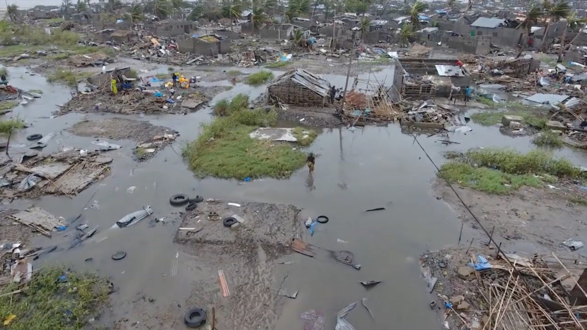
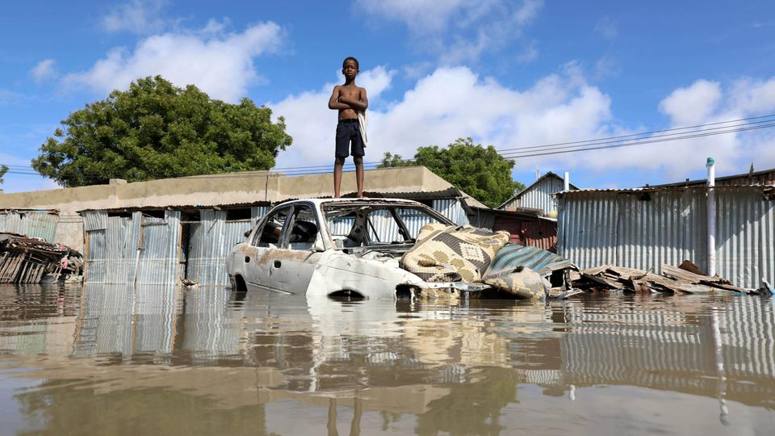

CORRECT ANSWER!
Soil degradation will increase flooding instead of decreasing it. The land is commonly altered from its natural landscape
when it rids its physical composition from soil degradation. For this reason, the transformed land is unable to soak up water, making flooding more frequent.
In other words, soil degradation takes away the soil's natural capability of holding water thus contributing to more and more cases of flooding.

Flood in Zimbabwe on March 21, 2019

Flood in Mogadishu, Somalia on October 21, 2019
×